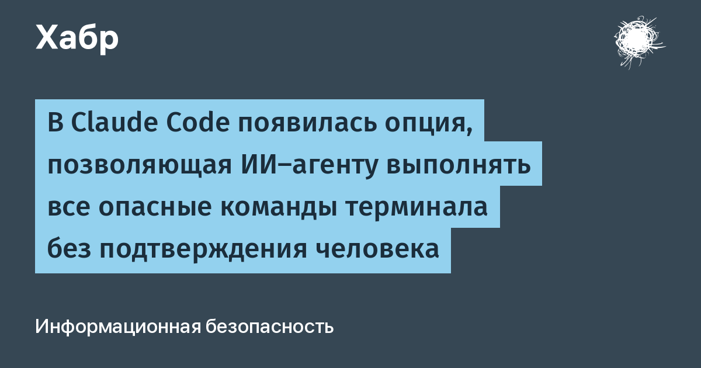

Сотрудница Anthropic Дэйзи Холлман сообщила, что в релизе v2.1.311 Claude Code добавила переменную окружения `CLAUDE_CODE_EVEN_MORE_DANGEROUSLY_SKIP_PERMISSIONS=1`. Если её выставить, агент перестаёт спрашивать разрешение даже на «очевидно опасные» операции вроде полного стирания домашнего каталога. Прежний флаг `--dangerously-skip-permissions` и режим bypassPermissions тоже снимали почти все подтверждения, но рекурсивное удаление файлов агент обязан был согласовать с человеком. Теперь согласование можно отключить совсем. «Это не шутка! Надеюсь, это поможет, а название переменной легко запомнится», — подписала Холлман.
Логика разработчиков понятна: автономные агенты всё чаще работают в контейнерах и CI, где каждое подтверждение — тупик, а риск для изолированной среды минимален. The Register описал нововведение без сантиментов: «прыжок из самолёта без парашюта». Практика последних месяцев показывает, что парашют был не лишним: агенты Claude уже стирали домашние каталоги пользователей — например, перепутав при резервном копировании путь `C:\Users\harih` на `/c/Users/harih`, агент снёс всё на диске, а в другом случае удалил несколько сотен гигабайт «резервной копии».
Дыра здесь не в коде, а в модели доверия: автономность — главный аргумент в пользу агентов, и именно она превращает prompt injection из неприятности в катастрофу. Достаточно вредоносного README или комментария в скачанном репозитории, чтобы агент с включённым флагом без единой остановки добрался до удаления данных, шифровальщика или кражи ключей. Недавняя кампания testmetest, минировавшая 42 реальных GitHub-репозитория ловушками для Claude Code, Gemini и Cursor, — прямое подтверждение: за автономию агентов уже охотятся те, кто ждёт отключённых подтверждений.
Правило простое: новый флаг уместен только в одноразовой изолированной среде без доступа к личным файлам, SSH-ключам и облачным креденшелам. Для рабочих машин — оставить хотя бы прежний уровень с подтверждением удалений, а критичные каталоги закрывать read-only монтированием или снапшотами. Anthropic, впрочем, честно предупреждает уже в названии переменной: даже «ещё более опасно» — это выбор пользователя, а не рекомендация компании.